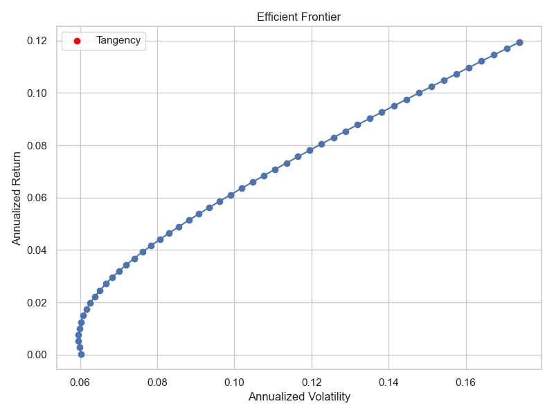

Optimizing a 401(k) with Linear Algebra and Statistics
A case study on the application of mathematics to personal finance
Introduction
Personal finance is probably one of the most important aspects of our lives, yet often one of the most misunderstood.
For many people, when they hear about anything finance-related (such as “investing” or “portfolio optimization”), the first image that comes to mind is the “Finance Bro” stereotype: a hedge-fund man who is obsessed with money, plays golf, and talks about stocks all day.
Or maybe they think of stock market horror stories, believing that the stock market is just a glorified casino.
Even retirement accounts like the 401(k) are often seen as a black box. Something best left to experts, or something that you just set and forget. Many people treat them as little more than a backup bank account, rarely giving them much thought until it’s too late. Or maybe they caved into the temptation of cashing out their 401(k) when they changed jobs, losing out on years of tax-deferred growth for short-term liquidity.
Even those who wisely start early and contribute consistently to their 401(k) may not have a clear strategy for how to allocate their investments within the account. They often “set-and-forget” without understanding the underlying principles. Many pick the standard/default option, reasoning that all the investing jargon is too difficult to understand, and simply “trust the magic” instead.
This case study is an attempt to demystify the world of personal finance and show how mathematical tools can be used to make informed decisions about retirement planning. Rather than relying on rules of thumb or qualitative advice, we will be taking a data-driven approach to optimize a 401(k) portfolio using linear algebra and statistics. The goal is to show that with the right tools and understanding, anyone can take control of their financial future and make informed decisions.
Basic concepts of Economics
Before we dive into the mathematics of portfolio optimization, it’s important to understand some basic economic concepts that will be relevant to our analysis.
- Time Value of Money and Inflation: Money not invested today will lose purchasing power over time due to inflation, and it also misses out on potential returns from investing.
- Risk and Return: Generally, higher potential returns come with higher risk. Understanding this tradeoff is crucial for making informed investment decisions.
- Diversification: Spreading investments across different assets can reduce risk without necessarily sacrificing returns.
- Utility and Risk Aversion: Different investors have different preferences for risk and return, which can be modeled using utility functions.
Assumptions & Simplifications of Data
The case study will be implemented in Python. We will use the library “yfinance” to download open financial data from Y!Finance.
First, we need to determine the scope of the data to use. Although Y!Finance does provide data of many stocks and ETFs, we will focus on the 3 primary assets that are commonly found in 401(k) plans: VTI (Domestic Stock), VXUS (International Stock), and BND (Bond). These three assets represent a broad diversification across different asset classes, and are available in almost all 401(k) plans. Most plans have default 3-fund portfolios that consists of these 3 assets. This reduces the complexity of our analysis from daytrader levels to manageable levels for personal finance while still providing meaningful insights.
While we can fetch decades worth of data, we will choose to analyze data from the past 5 years. Note that this number is completely arbitrary, and is chosen for the sake of simplicity. In practice, you may want to analyze a longer time period/more data to get a better sense of long-term trends and to smooth out short-term volatility. Also, please note that markets are inherently unpredictable, and past performance is not indicative of future results. The data we analyze may not be representative of future market conditions, and our conclusions should be taken with a grain of salt. These assumptions obviously wouldn’t hold up in the case of a severe crash, but for the sake of simplicity we will assume that the market will continue on its trend from the past data.
The data fetched in this study will be from 2021-05-26 to 2026-05-25.
Data Processing
Y!Finance provides us with historical daily adjusted close prices for each asset. We will use these adjusted close prices to calculate daily log returns, which is defined as: $$r_t = \ln\left(\frac{P_t}{P_{t-1}}\right)$$ where $P_t$ is the price at time $t$ and $P_{t-1}$ is the price at the previous time period.
Log returns are preferred over simple returns because they are time-additive and have nice statistical properties. This is particularly useful for the next step, annualizing the statistics. In the code
mu_daily = log_returns.mean()
sigma_daily = log_returns.std()
mu_a, sigma_a = annualize(mu_daily, sigma_daily)
the annualized returns is computed by scaling the daily returns by the number of trading days in a year (252). This works because log returns are additive over time. Similarly, the annualized volatility is computed by scaling the daily volatility by the square root of the number of trading days in a year (variance is additive, so volatility scales with the square root of time). This allows us to compare the returns and volatility of different assets on an annual basis, which is more intuitive for long-term investors.
Additionally, the risk-free rate is fetched from the current 3-month Treasury Bill rate, which is commonly used as a proxy for the risk-free rate in financial analysis. This will come in handy in later sections.
The Efficient Frontier Problem
The efficient frontier is a fundamental concept in modern portfolio theory, which describes the set of optimal portfolios that offer the highest expected return for a given level of risk. For any given level of risk, any portfolio that lies below the efficient frontier is suboptimal, because there exists another portfolio on the frontier that offers a higher expected return for the same level of risk.
Constructing the efficient frontier is an optimization problem. For n=2, this problem is relatively simple: just figure out the weight of one, then the other is just 1 minus that weight.
But for n=3 (our case), this becomes a more complex problem, because we have to figure out the weights of all three assets simultaneously.
Linear Algebra x Economics: Solution to the Efficient Frontier Problem
I present to you the classical Lagrangian Multipliers solution (as in Huang & Litzenberger, 1988) for the mean-variance efficient frontier using linear algebra. The derivation below gives closed-form expressions for the efficient weights and the portfolio variance.
Problem:
- let $\mathbf{w}$ be the vector of portfolio weights ($n\times 1$).
- let $\boldsymbol{\mu}$ be the vector of expected returns ($n\times 1$).
- let $\mathbf{\Sigma}$ be the $n\times n$ covariance matrix of returns (assumed symmetric positive definite).
Constrained optimization (target-return formulation): Minimize portfolio variance
$$ V(\mathbf{w}) = \mathbf{w}^\top \mathbf{\Sigma} \mathbf{w} $$
subject to
- full-investment: $\mathbf{1}^\top \mathbf{w} = 1$,
- required mean return: $\boldsymbol{\mu}^\top \mathbf{w} = \mu_p$ (target portfolio mean).
Solution
Let $\lambda$ and $\gamma$ be Lagrange multipliers for the two constraints. Form the Lagrangian
$$ \mathcal{L}(\mathbf{w},\lambda,\gamma) = \mathbf{w}^\top \mathbf{\Sigma} \mathbf{w} - \lambda(\mathbf{1}^\top \mathbf{w} - 1) - \gamma(\boldsymbol{\mu}^\top \mathbf{w} - \mu_p). $$
Take the gradient with respect to $\mathbf{w}$ and set it to zero:
$$ \nabla_{\mathbf{w}} \mathcal{L} = 2\mathbf{\Sigma} \mathbf{w} - \lambda \mathbf{1} - \gamma \boldsymbol{\mu} = \mathbf{0}. $$
Note: Notice how this looks like finding critical numbers in Calculus. Well, the Lagrangian Multiplier method is like the matrix equivalent, with gradient being the equivalent to derivative but for matricesSolve for $\mathbf{w}$:
$$ \mathbf{w} = \tfrac{1}{2}\mathbf{\Sigma}^{-1}(\lambda \mathbf{1} + \gamma \boldsymbol{\mu}). $$
It is convenient to rescale the multipliers: define $\alpha = \lambda/2$ and $\beta = \gamma/2$, so that
$$ \mathbf{w} = \mathbf{\Sigma}^{-1}(\alpha \mathbf{1} + \beta \boldsymbol{\mu}). \tag{1} $$
Solve $\alpha$ and $\beta$ from the two equality constraints. Multiply (1) on the left by $\mathbf{1}^\top$ and $\boldsymbol{\mu}^\top$:
$$ \begin{aligned} \mathbf{1}^\top \mathbf{w} &= \alpha, (\mathbf{1}^\top \mathbf{\Sigma}^{-1} \mathbf{1}) + \beta, (\mathbf{1}^\top \mathbf{\Sigma}^{-1} \boldsymbol{\mu}) = 1, \ \boldsymbol{\mu}^\top \mathbf{w} &= \alpha, (\boldsymbol{\mu}^\top \mathbf{\Sigma}^{-1} \mathbf{1}) + \beta, (\boldsymbol{\mu}^\top \mathbf{\Sigma}^{-1} \boldsymbol{\mu}) = \mu_p. \end{aligned} $$
Define the following constants for convenience:
$$ A = \mathbf{1}^\top \mathbf{\Sigma}^{-1} \boldsymbol{\mu},\qquad B = \boldsymbol{\mu}^\top \mathbf{\Sigma}^{-1} \boldsymbol{\mu},\qquad C = \mathbf{1}^\top \mathbf{\Sigma}^{-1} \mathbf{1}. $$
Let
$$ D = B C - A^2, $$
so that $D>0$.
For convenience we parametrize efficient portfolios in the (equivalent) form
$$ \mathbf{w} = \lambda,\mathbf{\Sigma}^{-1}\boldsymbol{\mu} + \gamma,\mathbf{\Sigma}^{-1}\mathbf{1}, $$
i.e. a linear combination of the two basis portfolios $\mathbf{\Sigma}^{-1}\boldsymbol{\mu}$ and $\mathbf{\Sigma}^{-1}\mathbf{1}$.
Apply the two constraints $\mathbf{1}^\top\mathbf{w}=1$ and $\boldsymbol{\mu}^\top\mathbf{w}=\mu_p$ to solve for $\lambda$ and $\gamma$. Written as short, separate displayed equations:
$$ 1 = \lambda A + \gamma C. $$
$$ \mu_p = \lambda B + \gamma A. $$
The same system in matrix form:
$$ \begin{bmatrix} C & A \\ A & B \end{bmatrix} \begin{bmatrix} \gamma \\ \lambda \end{bmatrix} = \begin{bmatrix} 1 \\ \mu_p \end{bmatrix} $$
Solving for $\lambda$ and $\gamma$ gives
$$ \gamma = \frac{B - A\mu_p}{D}, \qquad \lambda = \frac{C\mu_p - A}{D}. $$
Therefore the efficient weights are
$$ \mathbf{w}(\mu_p) = \lambda(\mathbf{\Sigma}^{-1}\boldsymbol{\mu}) + \gamma(\mathbf{\Sigma}^{-1}\mathbf{1}) $$
The minimal achievable variance for target return $\mu_p$ simplifies to this:
$$ \sigma_p^2 = \frac{1}{D}\left(C\mu_p^2 - 2 A\mu_p + B\right). $$
We can now use these formulas to compute the efficient frontier for our portfolio VTI/VXUS/BND.
Market Portfolio
The market portfolio is the portfolio on the efficient frontier that has the highest Sharpe ratio, which is defined as the ratio of excess return to volatility: It is on the efficient frontier and represents the tangent line drawn from the risk-free rate to the frontier.
The Sharpe ratio of a portfolio with weights $\mathbf{w}$ is given by:
$$ \text{Sharpe}(\mathbf{w}) = \frac{\boldsymbol{\mu}^\top \mathbf{w} - r_f}{\sqrt{\mathbf{w}^\top \mathbf{\Sigma}\mathbf{w}}}. $$
This is the most optimal risky portfolio for a given risk-free rate, and is the one that we will proceed with for the risky sleeve of our portfolio.

Note: There is a closed-form solution for the market portfolio weights, but it is not as elegant as the efficient frontier solution, and also requires short-selling to be allowed. Programmatically, we can just compute the Sharpe ratio for each portfolio on the efficient frontier and pick the one with the highest Sharpe ratio.Bootstrapping the Efficient Frontier
The efficient frontier is highly sensitive to estimation errors in the expected returns and covariance matrix. Small changes in the input parameters can lead to large changes in the optimal weights, which can result in poor out-of-sample performance. To address this issue, we can use resampling techniques to generate multiple estimates of the efficient frontier and then average the optimal weights across these estimates to obtain a more robust portfolio allocation. This approach is known as bootstrapping, and it can help to mitigate the impact of estimation errors and improve the stability of the optimal portfolio weights.
Merton Share
The Merton share is the optimal allocation to the risky portfolio (tangency portfolio) in the presence of a risk-free asset, given a certain level of risk aversion. The Merton share can be calculated using the following formula:
$$ w_M = \frac{\mu_M - \mu_{RF}}{\gamma \sigma_M^2} $$
where $w_M$ is the optimal share allocated to the risky market portfolio, $\mu_M$ is the market portfolio expected return, $\mu_{RF}$ is the risk-free rate, $\gamma$ is risk aversion, and $\sigma_M^2$ is the market portfolio variance.
Since the derivation not really linear-algebra related, it will not be covered directly in this blog. A full derivation is linked here if you are interested.
In our context, we can use the Merton share to determine how much of our portfolio should be allocated to the risky sleeve (the Market portfolio) and how much should be allocated to the risk-free asset (cash/T-bills).
Results and Conclusion
The parameters we will use in this case study are as follows:
- Inflation rate: 3.0%
- Risk aversion: 3.0 (this is a common assumption for moderate risk aversion, but it can be adjusted based on individual preferences)
- If you want to grow your portfolio more aggressively, you can use a lower risk aversion (e.g. 2.0), and if you want to be more conservative, you can use a higher risk aversion (e.g. 4.0 or 5.0).
For the sake of verification, we will use a set seed of 7 for the random number generator to ensure that the results are reproducible. This is important because the bootstrapping process involves random sampling, and we want to be able to get the same results if we run the code multiple times. You can change the seed to None to randomize the results, but keep in mind that the results may vary each time you run the code due to the randomness in the bootstrapping process.
All code in this blog will be released here.
Running the code gives us the following output:
Downloading 3 assets from 2021-05-26 to 2026-05-25...
Downloaded 1254 trading days of data
Date range: 2021-05-26 to 2026-05-22
Efficient frontier computed
Downloading 3-month Treasury Bill rate...
Current 3-month T-Bill rate: 3.59%
Final allocation including risk-free asset:
BND: 0.0304
VTI: 0.6691
VXUS: 0.2221
CASH/T-Bill: 0.0785
As you can see, by leveraging a bit of linear algebra and statistics, we can peek inside the “black box” of portfolio optimization. The results give us a data-driven baseline for our 401(k) allocation, taking into account our personal risk tolerance and the historical behavior of the market.
Of course, all models are inherently flawed and not perfect. This allocation assumes the future will somewhat resemble the past and that our risk aversion remains constant.
However, similar techniques can be applied to future data and adjusted for changes in risk preferences, market conditions, or new assets.
Personal finance doesn’t have to be intimidating or left purely to guesswork. With the right tools and a solid plan, you can take control of your financial future and make your money work efficiently for you. Happy investing!